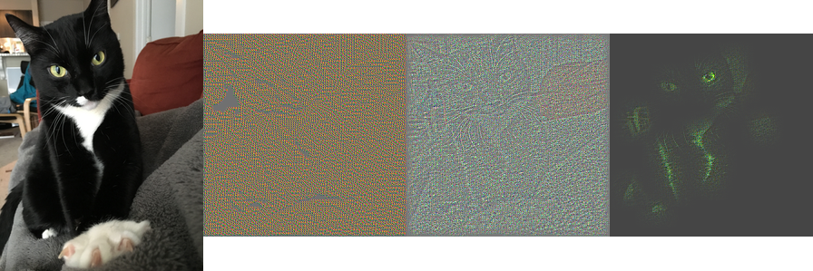
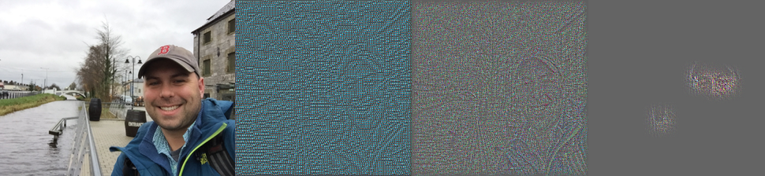
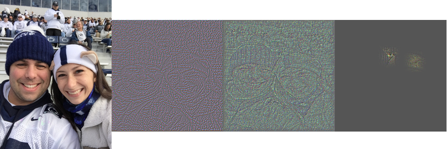

A lot has been written and shared over the past 5 years about photo recognition. Specifically, using Convolutional Neural Networks to classify images, recognize faces, and yes - determine if a photo is of a hot dog or not. Opinions of neural networks and deep neural networks range from IT IS GROUNDBEAKING AND WORLD CHANGING to "That’s exactly what we have been doing in statistics for years and years"
Last year, I completed a Udacity NanoDegree in Deep Learning to expand my skillset and get a better understanding of what is possible and what isn't in this space. It is hard to practically apply things like photo recognition for most clients, so in an attempt to apply some of my newfound knowledge to real-life data, I embarked on a little project to answer a couple of questions:
- Using a small set of personal pictures, can I create an accurate classifier with a Convolutional Neural Network (CNN)?
- Assuming I can achieve #1, can I apply other popular ML algorithms to the data and get comparable results?
- Are there any techniques I can apply to make the CNN more interpretable - or at least understandable to non-Data Scientist?
With these goals in mind, I give you Hamilton or Alex?!
Who is Hamilton?

Hamilton - specifically A. Hamilton Lentz - is our cat who was rescued from the wilderness of Florida. Being a tux and a miscreant, he appears in many of our photos and thus provided a very easy source of personal photos for this exercise. It is very important to note that Hamilton was named for Alexander Hamilton, and was also named before any of this Alexander Hamilton stuff became popular. I'm an avid history buff, a fan of the writings of Publius, and an staunch Federalist. Ok that's enough about the cat and why I named him.
The rest of the photos in my data set will be of myself.
What is a CNN?
CNN - Convolutional Neural Network, not CNN cable news - is a specific type of neural network architecture that changes the way networks feed in data. It is extremely helpful for photos, and I hope you'll see why with a little explanation.
A normal neural network would take every data point for an observation as an input into the network. In our case, since we're working with photos - that would be every pixel. Since we are also working with color photos saved in .png files, we have three variations of color as well. For a 256x256 resolution photo, that's 256x256x3 = 196,608 input pixels into a neural network.
There are some problems with this. First, that can be a lot of a data per observation to input into a data set. Secondly, this input does not make much common sense. One only has to look at a picture to know that a pixel is very much related to all of the pixels around it. A discussion of statistical independence aside, not accounting for the context in which a pixel exists may make it harder for a network to pick up on the real features of a data set.
What do I mean by real features? In theory we want our classifier to pick up on things in an image the we as humans see and use to determine an object in a photo. For example, we see an image of an elephant and we see big ears and a trunk. Wouldn't it be nice if our network could see this too?
This in some ways is the basis for convolutional neural nets, which slide "filters" across input photos of a given size (i.e. 3x3 pixels) and use those as inputs into our network. Look at the following chart taken from my Udacity course to visualize this.
Typically multiple convolutional layers are used to feed a fully connected layer which resembles that of a normal neural network.
There is a lot more in the world of CNNs to understand if you are going to implement one. I won't attempt to explain every detail here and do it justice. If you're following at a high level that should be good enough to keep tracking along.
Setting Things Up
For my data set, I used 346 personal photos - 173 photos of Hamilton and 173 photos of myself. This balanced data set does give all of my classifiers a leg up against what they would encounter in the 'real world', but for my purposes that is ok.
Each of the photos are of variable size, which means I need to standardize them to be the same shape. I used 224x224 pixels as my standardization shape.
For my CNN, I will use the following architecture - 5 convolutional layers, followed by 2 fully connected layers which then output to 2 neurons (probability of Hamilton, and probability of Alex). Convolutional layers 1, 2, and 5 are also followed up by what is called a "Maxpooling" layer. This layer computes the maximum value of small "neighborhoods" in the input. It is widely used in CNNs because they often provide more accurate models and allow you to condense layers. The network will be implemented in TensorFlow, a popular library for building deep neural networks.
To compare against the CNN, I will also be running a Gradient Boosted Tree model, Logistic Regression, and Support Vector Machine using scikit-learn), one of the best machine learning libraries out there.
If you want to follow along and see my code, you can do so here: https://github.com/alex-lentz/alex_or_hamilton/tree/master
Results
One of my biggest pet peeves is using Accuracy as a model validation metric, but in our case since I'm using a balanced data set, it gives us a nice number to understand our overall model performances. From the chart above, the CNN does very well correctly classifying 90% of photos on a test set. However, we can also see that a Gradient Boosted Tree also does very well and classified a surprising 84% of photos correctly. Logistic Regression - the standard bearer of ML models - does pretty well with 77%, while the Support Vector Machine only classifies 69% correctly (to be fair I did not spend much time trying to tune this one).
There are more things to consider than just Accuracy. I've created a Tableau Public visulization to show the confusion matrix for each model, as well as a comparison of the Precision-Recall curves of the models. Precision is % of the time that when the model predicts Cat that it is correct. Recall, is the % of Cat photos the model correctly predicts. These visuals and metrics can help us see if our models are favoring one prediction over another.

A couple things from the charts:
- When looking at the Precision-Recall curves, we can see that the CNN appears to be the more stable of the models. The curves are developed by plotting Precision and Recall at different probability thresholds (or cut offs). We see large dips because we only have 70 photos in our test set and just one or two incorrectly classified photos can make a big difference.
- The Gradient Boosted Tree and Support Vector Machine favored predicting Cat, as opposed to the Logistic Regression that favored predicting Me (Alex), and the CNN which was evenly split. The test set turned out to be 38 photos of Alex and 32 photos of Cat, so the Logistic Regression and CNN seemed to do better in that regard.
- Not recorded here is the training time of each classifier. The CNN took much longer than the other classifiers to train, as well as a lot of time to code and tweak.
To answer some of my original questions:
- Using a small set of personal pictures, can I create an accurate classifier with a Convolutional Neural Network (CNN)? Yes, we can.
- Assuming I can achieve #1, can I apply other popular ML algorithms to the data and get comparable results? Yes - but I have more theories to come
What About Interpreting Our CNN?
This leaves us with my last question - whether or not we can extract any interpretation or understanding from our trained CNN.
First, TensorFlow comes with a great feature called TensorBoard. It allows you to visualize your neural networks among many other things. Let's look at my graph from TensorBoard:
In the graph we can see all of my layers as well as the sizes of the tensors that flow between each layer. While not super helpful in explaining what happened to a business person, it is super cool!
Let's move on to something that might help. There is a great package for Python and TensorFlow called tf_cnnvis which implements two different visualization techniques for CNNs. The one that I used is based on a paper by Matthew D. Zeiler and Rob Fergus. This method essentially uses information in a layer of the CNNs to reconstruct the original image. Using this technique, you can start to "see" what the CNN is seeing for any given picture.
Using the tf_cnnvis package, I was able to create the images below:
  Though it is not crystal clear, you can start to see some of the things that the CNN sees as it tries to classify an image. Interestingly enough, the picture of my Wife and I is incorrectly classified as Cat - likely because my Wife is wearing Nittany Lion Ears. While not as simple as interpreting coefficients into a scorecard or outputing variable importance metrics, this methodolgy does at least provide some insite into what is happening.
Conclusion
Yes - you can use smaller sets of personal photos for some fun with TensoFlow, but you can get some pretty darn good models with other modeling techniques as well. 90% accuracy is definitely an advantage over the Logistic Regression model at 77% - but is it really worth creating a deep neural network for the gain from the Gradient Boosted Tree at 84% accuracy?
In the real world - probably not. But I'm not sure this experiment really helped the CNN shine above the others. I gave it a balanced data set and only needed it to predict Cat or Alex. In future extensions of this, I will look to complicate the data and see if the Gradient Boosted Tree model can still keep up.